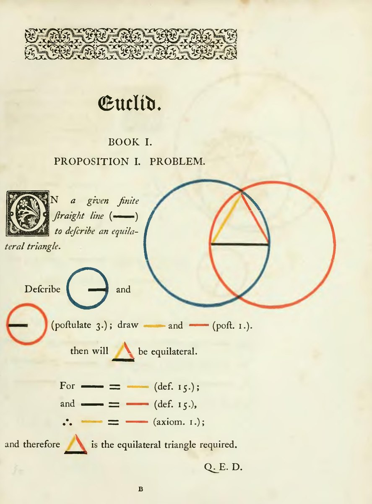

Lines of Symmetry
MA.3.GR.1.1 Describe a circle: the radius and the diameter.
MA.K12.MTR.2.1 Show math in many ways. MTR.5.1 Use patterns and structure. MTR.6.1 Check that answers make sense.
Today: fold shapes to find lines of symmetry, and draw circles with a compass. Euclid, Elements, Book I, Proposition 1.

Alexandria, Egypt · about 300 BC

How can a fold show that two halves match?
Fold on the dashed line. If both halves land on top of each other, the fold is a line of symmetry.
You will…
- Fold shapes to test whether the halves match exactly.
- Draw the lines of symmetry a shape has: none, one, or more than one.
- Use a compass to draw circles and build Euclid's first picture.
A building that matches
This is the front of a Greek temple at Agrigento, in Sicily. Builders finished it about 430 BC, more than 100 years before Euclid wrote his book. Cover the right side with your hand and look at the left. Then cover the left and look at the right. The columns and the triangle roof match on both sides of the middle.
Greek builders planned their temples so the two halves matched. Euclid planned his pictures the same way, with a compass.
Today's math: fold a shape to see if its halves match exactly, and count how many folds work.
Warm up with × 6 and × 8 facts. Type each answer, then check. You can fix any answer and check again.
Fold it in half
Someone folded this paper heart on the dashed line. Count the halves the fold makes.
Think: Fold the Vase
🔨 Do · ✏️ WriteEuclid's students drew a vase and marked three fold lines on it. Only some folds will work.
A paper vase shape with three dashed lines across it: one up and down, one across the middle, and one slanted. Tap a dashed line to fold the paper on it. The folded half shows in green when it matches and in red when it sticks out.
Try all 3 folds
Tap each dashed line, one at a time. Watch whether the folded half lands right on top of the other half.
Which fold matched?
A fold that makes the two halves match exactly is a line of symmetry. Each half is a mirror image of the other one.
What a line of symmetry is
Fold a shape along a line. If the two halves land right on top of each other, with nothing sticking out, that line is a line of symmetry. A shape with one is symmetric. The two matching halves are mirror images: the same shape, facing the other way.
How many lines a shape has
Some shapes have exactly one line of symmetry. Some have more than one. Some have none at all, because no fold makes the halves match. Try every fold before you decide.
Four ways to stay on track
Your Turn: Build the Other Half
🔨 DoHalf an arrow is on the geoboard. Build the half that is missing, so the dashed line becomes a line of symmetry.
A geoboard with 11 rows of 11 pins. A gold dashed line runs straight down the middle. On the left of it, a purple band shows half an arrow. The right side is empty.
Place the 3 missing corners
Tap the pin that mirrors each corner on the left. A corner 2 steps from the line needs a partner 2 steps from the line on the other side.
Ben's Rectangle
🔨 DoBen draws a line from one corner of a rectangle to the opposite corner. He says, "That makes two equal halves, so it's a line of symmetry."
A paper rectangle with four dashed lines on it. The first one goes corner to corner, the way Ben drew it. Tap a dashed line to fold the paper on it.
Fold Ben's line first, then the rest
Tap Ben's corner-to-corner line and watch what happens. Then tap the other three dashed lines, one at a time.
Count the lines of symmetry
Ben's two halves really are the same size. But when he folds, one corner pokes out past the other half, so they don't match. Equal halves are not enough: the halves have to land on top of each other.
Mia's Four Sides
🔨 Do · ✏️ WriteMia looks at a shape with 4 sides. She says, "4 sides, so it has 4 lines of symmetry."
A paper shape with 4 sides. Its two slanted sides are the same length. Four dashed lines are drawn on it, one for each of Mia's guesses.
Try all 4 folds
Tap each dashed line, one at a time, and watch whether the halves match.
Count the lines of symmetry
Help Mia
Kai Keeps Looking
🔨 Do · ✏️ WriteKai folds a triangle again and again. He says, "Every shape has a line of symmetry. I just haven't found this one yet."
A paper triangle with no two sides the same length, the kind you called scalene in Lesson 5. Three dashed lines are drawn on it, one from each corner.
Try all 3 folds
Tap each dashed line, one at a time, and watch whether the halves match.
Count the lines of symmetry
Help Kai
All three sides of this triangle are different lengths, so no fold can make the halves match. Some shapes have no line of symmetry at all.
On Your Own: Set It, Draw It
🔨 Do · ✏️ WriteEuclid drew every circle with a compass. Set yours on the ruler, then draw.
A compass standing on paper. Its needle point stays in one place, and the ruler below shows how far the pencil leg is from it in centimeters. Drag the pencil leg to set the opening, then press ✏️ Draw the circle.
Open it to 3 cm and draw
Drag the pencil leg until the ruler shows 3 cm. Then press ✏️ Draw the circle.
How far across?
Close it to 1 cm and draw again
Leave the needle point where it is. Drag the pencil leg to 1 cm and press ✏️ Draw the circle.
How far across the small one?
What does a wider opening do?
Drag the card that finishes the sentence into the box.
Tell why it works
Euclid's First Problem
🔨 DoThe very first problem in Euclid's book starts with one line and a compass. Follow his steps.
A straight line with a dot at each end, marked A and B. The buttons above the picture do one step each: open the compass, draw a circle around A, then draw one around B.
Problem 1 · Open the compass
Press 📏 Open the compass from A to B, so the opening is exactly as long as that line.
Put the needle on A
Press ✏️ Draw the circle around A. Keep the same opening.
Put the needle on B
Press ✏️ Draw the circle around B, still with the same opening.
Find the fold line
Tap each of the two places where the circles cross. The line through them is the fold line.
Problem 2 · The triangle
Both circles have the same radius, so the crossing points are the same distance from A and from B. Fold the picture on the dashed line and the two circles land on each other. Euclid used this one picture to build a triangle with 3 equal sides, without measuring anything.
Prove It
✏️ WriteProblem 3 · Prove It
How Many Folds Has a Square?
Four dashed lines are drawn on this square. Fold each one and count the folds that make the halves match.
Turn in your work
- Check the list below. Jobs 1 to 8 are required. The Bonus is optional.
- Press 📋 Gather my answers, then 📋 Copy. Or press 🖨️ Print or save as PDF.
- Open this lesson's assignment in Canvas.
- Paste your answers (or upload your PDF and journal photo), then press Submit.
All my answers
Your answers and your work on this page save on this device as you go.
Before you turn in
- I finished Jobs 1 to 8.
- I can tell what makes a fold a line of symmetry.
- I can find whether a shape has none, one, or more than one.
- I can set a compass and draw a circle, and I know the diameter is double the radius.
- I tried the Bonus. (optional)
Unit 12 Check
Next, you'll show everything from Chapter 12 together: circles, angles, triangles, four-sided shapes and lines of symmetry.
A Mirror in Music
Bach wrote this little canon in 1747. One voice starts the tune. The second voice plays the very same tune turned upside down: where the first voice steps up, the second steps down. It is a mirror you can hear.
Johann Sebastian Bach, a canon by inversion from "The Musical Offering". Recording by Andiport, CC BY-SA 4.0, via Wikimedia Commons.